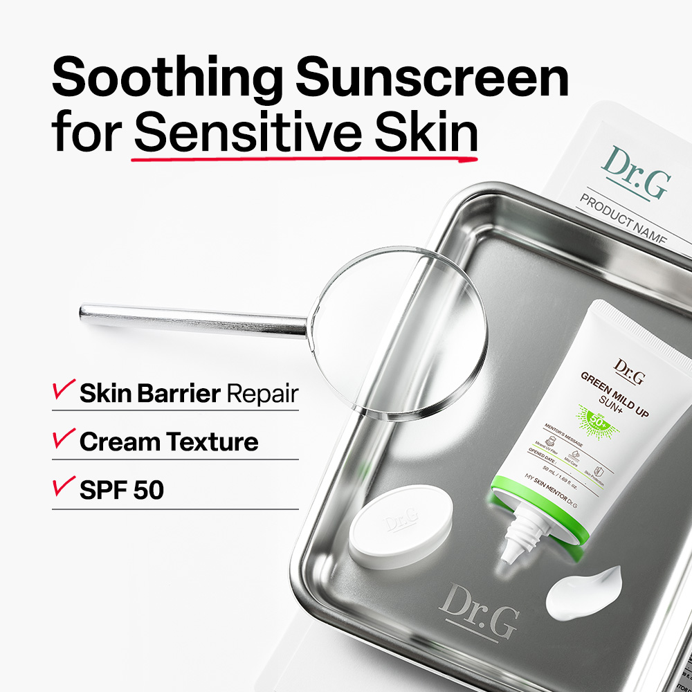
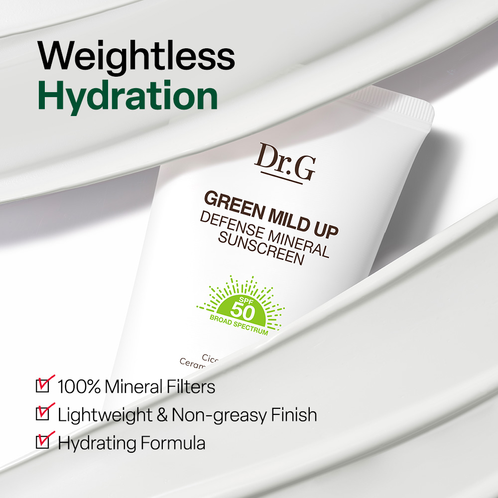
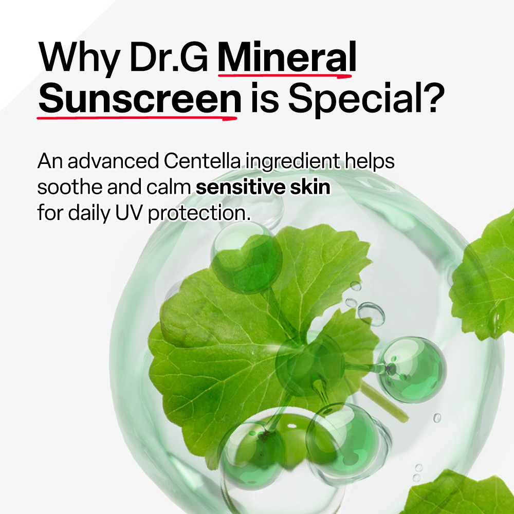
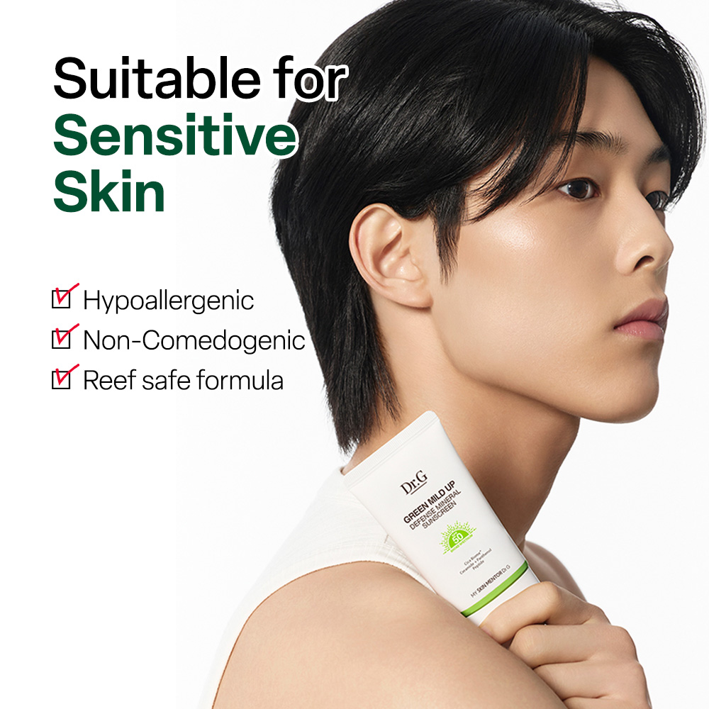
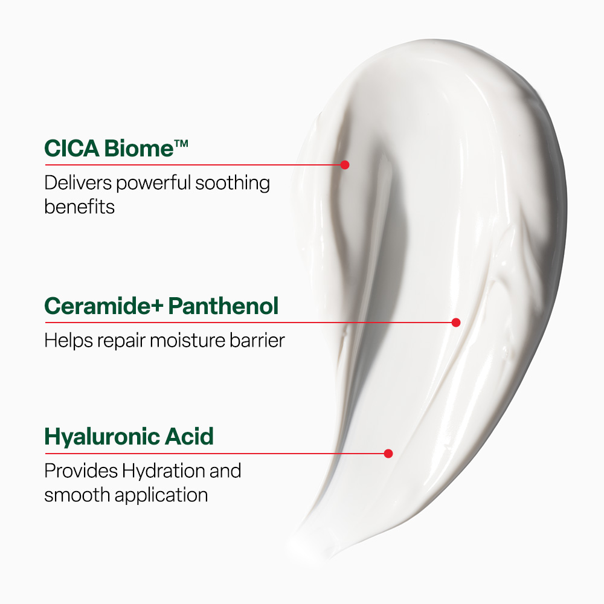
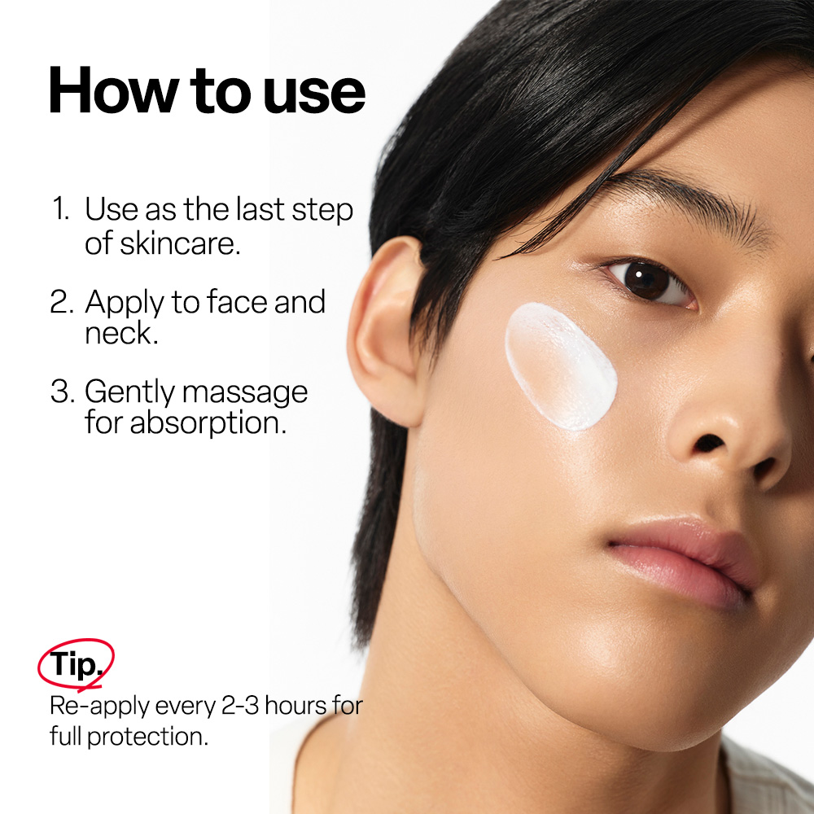

그린 빌딩 선 플러스 50ml
올리브영 6년 연속 선케어 1위*, 닥터지의 믿을 수 있는 순한 선케어 포뮬러입니다.
징크옥사이드와 엑토인이 자외선에 민감하고 연약한 피부를 외부 유해 환경으로부터 보호하고 피부 장벽을 강화해줍니다.
징크옥사이드와 엑토인이 자외선에 민감하고 연약한 피부를 외부 유해 환경으로부터 보호하고 피부 장벽을 강화해줍니다.
구분 :썬케어
- 올리브영* 선케어 6년 연속 1위, 닥터지의 믿을 수 있는 순한 선 케어 포뮬러로 구동됩니다.
- A 피부과 테스트를 거친 미네랄 자외선 차단제 진정 성분을 함유한 진정 포뮬러로 자극 없는 데일리 케어를 선사합니다. 아연 그리고 엑토인 자외선에 민감하고 연약한 피부를 외부 유해물질로부터 보호하고 피부장벽을 강화해줍니다.
- 닥터지 도트 프린트 선 Plus 기능은 다음과 같습니다. 부드럽고 끈적이지 않는 무겁거나 뻣뻣한 느낌 없이 매끄럽고 산뜻하게 밀착되어 자연스럽고, 경량 매일 보호.
- 우리 공식의 핵심은 다음과 같습니다. 7중 다중 방지 보호 시스템, UVA, UVB, UVA1은 물론 적외선, 블루라이트, 미세먼지, 꽃가루로부터 피부를 보호하도록 설계되었습니다.
- 100% 미네랄 자외선 차단: 경량 SPF50 산화아연이 함유된 미네랄 자외선 차단제는 매일 광범위한 자외선 차단 기능을 제공하는 동시에 민감하고 반응성이 있는 피부에 적합합니다.
- 피부 장벽을 진정시키고 회복시킵니다: 로 공식화 시카 생물군계™, 세라마이드 그리고 판테놀 눈에 보이는 붉은기를 진정시키는데 도움을 주며, 피부 장벽을 강화해 매일매일 사용하면 건강한 피부로 유지해줍니다.
- 가벼운 하이드레이팅 텍스처: 가수분해 성분이 풍부해진 히알루론산 메이크업 아래에도 편안하게 흡수되고 레이어링이 잘 되는 부드럽고 끈적임 없는 크림으로 지속적인 수분 공급을 제공합니다.
- 민감한 피부를 위해 임상적으로 개발되었습니다: 저자극성 테스트 및 비코메도제닉 테스트를 거쳤으며 파라벤, 향료, 알코올 및 동물 유래 성분이 포함되지 않은 산호초 안전 포뮬러로 매일 착용할 수 있습니다.
- 닥터지 전문분야: 닥터지는 25년 전, 저명한 피부과 전문의 안건영 원장이 설립한 대한민국 No.1 스킨케어 브랜드입니다. 우리의 피부과 전문의가 개발한 포뮬러는 피부 자극을 최소화하는 동시에 효과적인 스킨케어 솔루션을 제공하도록 세심하게 설계되었습니다.
- 피부자극지수 0.0*으로 안정적인 자외선 차단 기능을 제공하며, 피부 장벽을 강화해 줍니다. 28% 피부 민감도를 감소시키는 방법 76% ~ 후에 4주 지속적인 사용**.
*KC피부임상연구센터에서 2022년 1월 12일부터 2월 15일까지 만 19~50세 성인 30명을 대상으로 실시한 누적 피부자극 및 민감성 임상시험 기준입니다. 결과는 개인마다 다를 수 있습니다.
**피앤케이 피부연구소에서 2025년 10월 13일부터 11월 11일까지 20~59세 성인 남녀 21명을 대상으로 진행한 경피수분손실(피부장벽) 및 피부민감도 개선 임상시험 기준. 결과는 개인마다 다를 수 있습니다." - 산화 아연
- 기능: 피부 표면에 부드러운 물리적 자외선 차단막을 형성하여 자극 없이 유해광선을 반사시켜 줍니다.
- 중요한 이유: 안전하고 광범위한 미네랄 자외선 차단 기능을 제공하여 섬세하고 쉽게 자극받는 민감한 피부 타입에 이상적입니다.
- 기능: 엑토인과 비타민 D 유도체를 미네랄 포뮬러에 주입하여 외부 공격자로부터 피부를 보호합니다.
- 중요한 이유: 강력한 보호 케어와 장벽 강화 시너지 효과를 선사해 건강한 피부 기초를 강화하고 유지하는데 도움을 줍니다.
- AQUA / WATER / EAU, ZINC OXIDE, PROPANEDIOL, BUTYLOCTYL SALICYLATE, PROPYLHEPTYL CAPRYLATE, COCO-CAPRYLATE/CAPRATE, CYCLOHEXASILOXANE, CAPRYLYL METHICONE, ISODODECANE, POLYGLYCERYL-3POLYDIMETHYLSILOXYETHYL DIMETHICONE, METHYL TRIMETHICONE, METHYL METHACRYLATE CROSSPOLYMER, MAGNESIUM SULFATE, DISTEARDIMONIUM HECTORITE, TRIETHOXYCAPRYLYLSILANE, 1,2-HEXANEDIOL, POLYGLYCERYL-2 DIPOLYHYDROXYSTEARATE, LAURYL POLYGLYCERYL-3 POLYDIMETHYLSILOXYETHYL DIMETHICONE, POLYMETHYLSILSESQUIOXANE, GLYCERYLCAPRYLATE, CAPRYLYL GLYCOL, ETHYLHEXYLGLYCERIN, SODIUMHYALURONATE, BUTYLENE GLYCOL, TOCOPHEROL, 센텔라 아시아티카 EXTRACT, CAESALPINIA SPINOSA FRUIT EXTRACT、PINUS PINASTER BARK EXTRACT, KAPPAPHYCUS ALVAREZII EXTRACT, 7-DEHYDROCHOLESTEROL, 엑토인, HOUTTUYNIA CORDATA EXTRACT, BUDDLEJAOFFICINALIS FLOWER EXTRACT、LACTOBACILLUS FERMENT, HYDROXYCINNAMIC ACID, RUTIN (F.I.L. T70101823/2)
- "1단계: 스킨케어 마지막 단계(외출 15~30분 전)에 적당량을 취해 주세요.
2단계: 피부결을 따라 얼굴 안쪽에서 바깥쪽으로 부드럽게 펴 발라줍니다.
3단계: 손바닥으로 가볍게 두드려 피부에 부드럽게 밀착되고 흡수되도록 도와주세요.
전문가 팁: 히알루론산, 판테놀, 세라마이드 제품과 함께 사용하면 수분 공급 시너지 효과를 높일 수 있습니다. 이전 스킨케어를 바르기 전 가볍게 흡수시켜 매끄럽고 무게감 없이 밀착됩니다."


자주 묻는 질문
한국 소비자들이 닥터지를 사랑하는 이유
병원에서 시작된 혁신


K-뷰티 감성


민감성 피부 테스트 완료